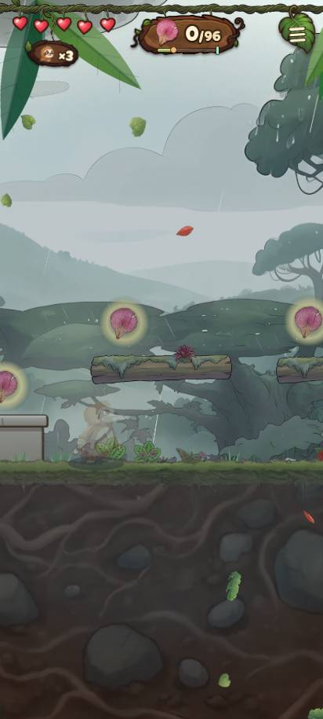
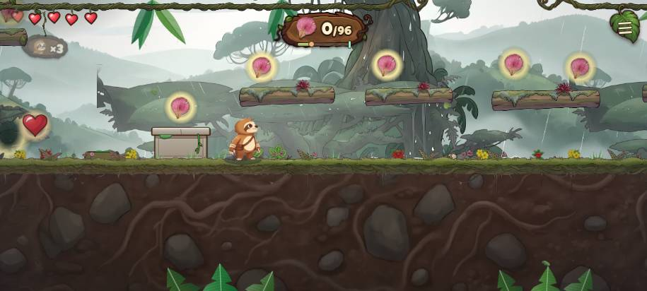
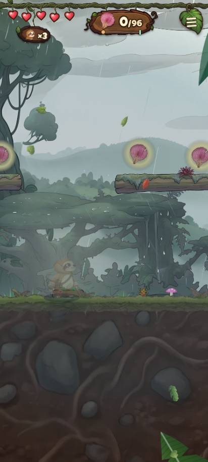
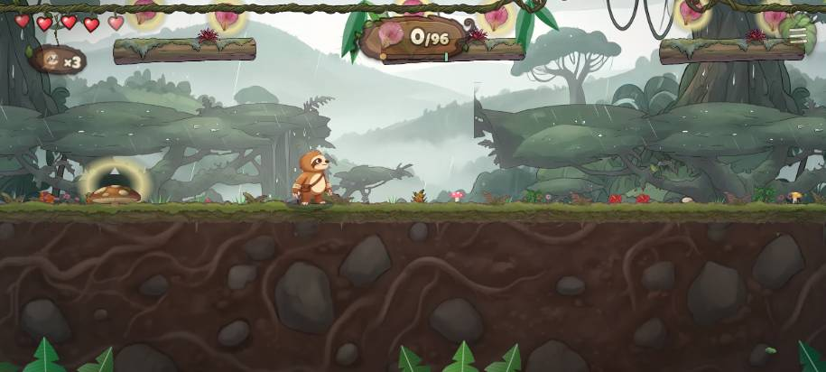
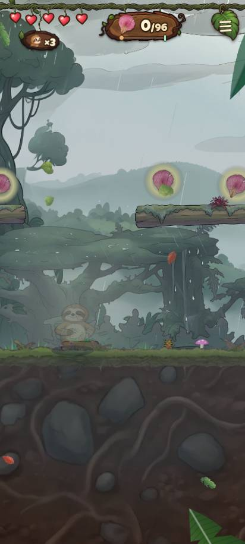
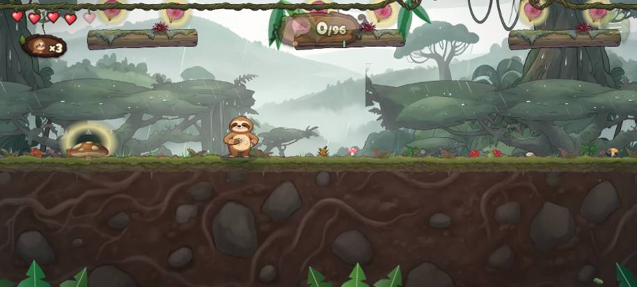
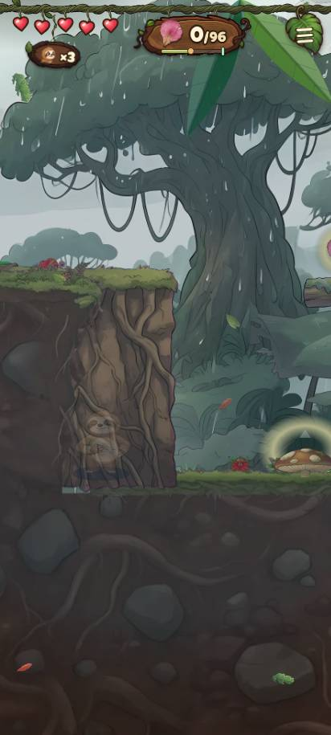
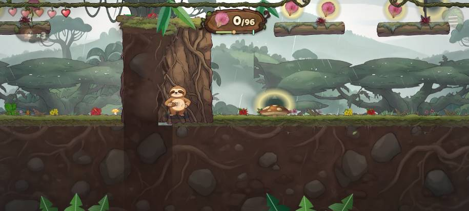
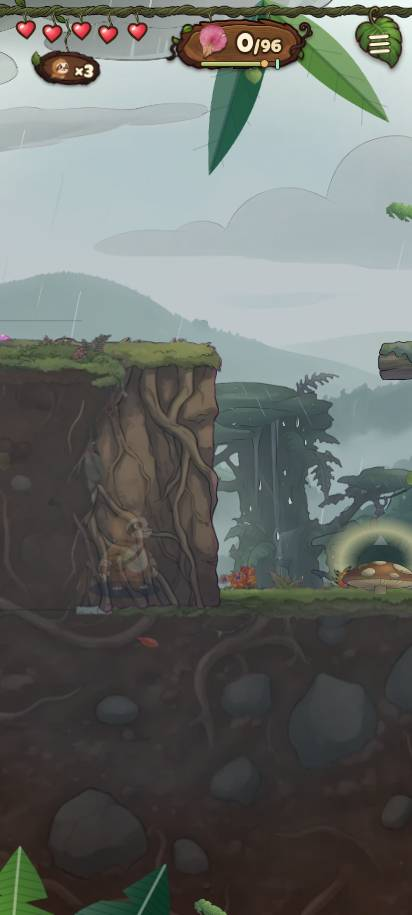
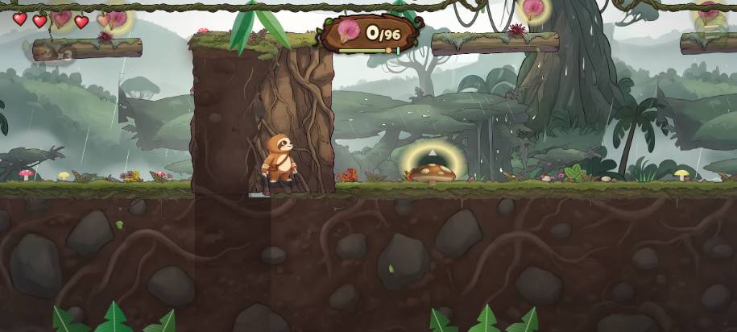

World 1 overview · base = 02ab8cdd (contains origin/main 1dc39cd7 + ccr-0d59a91c 0f1b6c0c) · layout 1, Normal unless said
1-5 Where She Walked
The goal adds no moves: the shortest way to the shrine makes 74 moves, the goal route 74 (156 s).
29 / 100 validator score
A measuring stick, not a fun rating: ten families of checks at 10 points each. Each family's rule is listed under "How it is scored".
| variety |
| 0.2 |
| repeats |
| 6 |
| dead walking |
| 8 |
| pacing |
| 2.5 |
| a miss costs |
| 1.8 |
| padding |
| 2.5 |
| tempo |
| 5 |
| something new |
| 3 |
| hazards matter |
| 0 |
| fair and seen |
| 0 |
What it asks, in order
MUUQjCjMjFjQUBjjjMJJJUBjjjjMUUUUMJJJJMMJJJQJJJJQUUUUQMMJJJQJJJJQUUUUQjjjjj
74 moves in 156 s on the goal route (the shortest way to the shrine, skipping the goal: 74 moves). Letters: J jump (a real fall under it), j safe hop over a gap, U jump twice (a gap or rise only the second jump covers), Q jump the level check can't confirm, B breaking branch, C climb, M mushroom bounce, F fight an animal.
IIIFFFFRFFFFFFFFFFFFFFFFFFFFFFFR
Pacing, one letter per 5 s: I intro, F flow, P puzzle, T tight, R rest.
Flags (21)
dead walk: 2.5 s of walking with nothing to do
at x 538research 2026-11-04 §1 (no dead walk over 2.5 s)
dead walk: 3.4 s of walking with nothing to do
at x 7741research 2026-11-04 §1 (no dead walk over 2.5 s)
repeat: the same four moves "MJJJ" 4 times
at x 9686STAGE-RULES §0.3, research §7 (no beat repeated to fill time)
repeat: the same four moves "JJJQ" 4 times
at x 17628STAGE-RULES §0.3, research §7 (no beat repeated to fill time)
pacing: 115 s of moves with no rest (§0b.1: groups of 5-20 s, a rest between)
research §1 (pacing tags, never T-T or P-P), STAGE-RULES §0b.1-2
pacing: only 3 groups of moves (§0b.2: four parts, introduce, develop, twist, master)
research §1 (pacing tags, never T-T or P-P), STAGE-RULES §0b.1-2
pacing: never tight: no 5 s window asks for more than about one move a second (no burst, no climax)
research §1 (pacing tags, never T-T or P-P), STAGE-RULES §0b.1-2
nothing bites: 96% of the beats after the first 30 s cost nothing when missed (0 cost a setback, 2 a life)
STAGE-RULES §0.2/§0.5, quality supervisor 2026-11-04 (once taught, sloppiness costs something)
padding: the finish is 57% of the stage (from 67 s), pieces drawn until the clock says two minutes
quality supervisor 2026-11-04 (fillTo finishes), STAGE-RULES §0.3
padding: the finish lays the "highrun" piece 10 times
quality supervisor 2026-11-04 (fillTo finishes), STAGE-RULES §0.3
one tempo: only ever asks to hurry, never to wait
STAGE-RULES §0b.3 (hurry and patience)
enemy by a landing: a snake 96 px from where a jump lands
at x 5335research §6 (none within 150 px of a landing; about 35% enemy-free), R-159
looks like the stage before: 47% alike in its pieces and art to 1-4 (at most 45% for the stage right before)
research §1 (at least 45% different), quality supervisor (0.45 against the stage before)
looks like an earlier stage: 98% alike in its pieces and art to 1-1 (at most 55%)
research §1 (at least 45% different), quality supervisor (0.45 against the stage before)
like an earlier stage: 99% alike in its moves to 1-1 (at most 55%)
research §1 (at least 45% different), quality supervisor (0.45 against the stage before)
branches outrun: 8 of 8 judged runs of breaking branches crossed by just holding right, none giving way under him (layouts 1-3, Normal)
at x 8317PLAN-TO-80 A.2, STAGE-RULES §0.2


landing unseen: 2 of 212 running jumps took off with the landing's near edge off screen (sideways)
at x 1391research §1 (landing in view at take-off)


landing unseen: 11 of 105 running jumps took off with the landing's near edge off screen (upright)
at x 1391research §1 (landing in view at take-off)


clumsy thumb: a jump the clumsy thumb makes 40% of the time (2/5; floor 70%)
at x 14733research §1, STAGE-RULES §1b (70% floor, Worlds 1-5)


clumsy thumb: a jump the clumsy thumb makes 50% of the time (3/6; floor 70%)
at x 19866research §1, STAGE-RULES §1b (70% floor, Worlds 1-5)
clumsy thumb: a jump the clumsy thumb makes 29% of the time (2/7; floor 70%)
at x 25775research §1, STAGE-RULES §1b (70% floor, Worlds 1-5)


Across the rolls
| flag | Normal layouts hit (of 16) | Easy layouts hit |
|---|
| dead walk | 16 | 16 |
| repeat | 16 | 16 |
| pacing | 16 | 16 |
| nothing bites | 16 | 16 |
| padding | 16 | 16 |
| one tempo | 16 | 16 |
| enemy by a landing | 16 | 16 |
| looks like an earlier stage | 16 | 16 |
| like an earlier stage | 14 | 14 |
| looks like the stage before | 4 | 4 |
| like the stage before | 3 | 4 |
What a miss costs (after the first 30 s)
55 free retries, 0 setbacks, 2 lives; 7 jumps the level check can't confirm, not priced.
Does each hazard matter?
| layout 1 normal | 8317-9222: 4 pieces, 0 gave way under him → outrun
11185-12100: 4 pieces, 0 gave way under him → outrun |
| layout 1 easy | 8317-9222: 4 pieces, 0 gave way under him → outrun
11185-12100: 4 pieces, 0 gave way under him → outrun |
| layout 2 normal | 8260-9198: 4 pieces, 0 gave way under him → outrun
11092-12028: 4 pieces, 0 gave way under him → outrun |
| layout 2 easy | 8260-9198: 4 pieces, 0 gave way under him → outrun
11092-12028: 4 pieces, 0 gave way under him → outrun |
| layout 3 normal | 8152-9091: 4 pieces, 0 gave way under him → outrun
10534-11691: 5 pieces, 0 gave way under him → outrun
12333-13513: 5 pieces, 0 gave way under him → outrun
21582-22692: 5 pieces, 0 gave way under him → outrun |
| layout 3 easy | 8152-9091: 4 pieces, 0 gave way under him → outrun
10534-11691: 5 pieces, 0 gave way under him → outrun
12285-13513: 5 pieces, 0 gave way under him → outrun
21582-22692: 5 pieces, 0 gave way under him → outrun |
The first-timer bot (fixed bot; rescues beside every number)
| run | end | goal | rescues | counted | landings unseen |
|---|
| layout 1 normal t0 | sealed door at 196.6 s | 92/96 | 2 | yes | 2/55 |
| layout 1 normal t1 | sealed door at 169.4 s | 85/96 | 2 | yes | 0/54 |
| layout 1 normal upright t0 | sealed door at 196.6 s | 92/96 | 2 | yes | 8/55 |
| layout 1 easy t0 | sealed door at 269 s | 75/77 | 6 | no | 29/68 |
| layout 1 easy t1 | shrine at 201.9 s | 80/77 | 3 | yes | 19/62 |
| layout 1 easy upright t0 | sealed door at 269 s | 75/77 | 6 | no | 36/68 |
| layout 2 normal t0 | sealed door at 164.1 s | 89/96 | 1 | yes | 0/50 |
| layout 2 normal t1 | sealed door at 163.9 s | 91/96 | 1 | yes | 0/53 |
| layout 2 normal upright t0 | sealed door at 164.1 s | 89/96 | 1 | yes | 3/50 |
| layout 2 easy t0 | shrine at 167.5 s | 79/77 | 2 | yes | 7/44 |
| layout 2 easy t1 | sealed door at 212.4 s | 73/77 | 1 | yes | 12/48 |
| layout 2 easy upright t0 | shrine at 167.5 s | 79/77 | 2 | yes | 10/44 |
| layout 3 normal t0 | sealed door at 202.5 s | 33/78 | 10 | no | 0/31 |
| layout 3 normal t1 | sealed door at 202.5 s | 35/78 | 9 | no | 0/29 |
| layout 3 normal upright t0 | sealed door at 202.5 s | 33/78 | 10 | no | 8/31 |
| layout 3 easy t0 | sealed door at 199.9 s | 30/62 | 8 | no | 0/28 |
| layout 3 easy t1 | sealed door at 209.1 s | 31/62 | 9 | no | 0/29 |
| layout 3 easy upright t0 | sealed door at 199.9 s | 30/62 | 8 | no | 3/28 |
Normal runs met: swung 0 / 0 / 0 / 0 / 0 / 0, climbed 2 / 0 / 1 / 1 / 0 / 0, roped 0 / 0 / 0 / 0 / 0 / 0, bounced 18 / 14 / 17 / 15 / 1 / 1, hid 0 / 0 / 0 / 0 / 0 / 0, fought 0 / 0 / 0 / 0 / 0 / 0, eagle hits 0 / 0 / 0 / 0 / 0 / 0.
The clumsy thumb
16 of 20 clumsy runs played (layout 1, Normal). Jumps toward the shrine tried 5+ times: 62; under 70%: 3. Left out: 232 hops back the way he came (the bot turning back counts a safe landing behind him as a miss; not a jump the stage asks).
| x | made | tries |
|---|
| 25775 | 29% | 7 |
| 14733 | 40% | 5 |
| 19866 | 50% | 6 |
| 18401 | 80% | 10 |
| 20697 | 86% | 14 |
| 6074 | 97% | 67 |
| 7004 | 98% | 41 |
| 498 | 100% | 13 |
What it is made of
| gaps to jump | 161 |
| mushroom bounce | 14 |
| trunk climb | 2 |
| rope shimmy | 1 |
| breaking branch | 8 |
| snake | 1 |
| hidden find | 1 |
The six things (§0b.5): run, jump, branches, vines; pairs 6. New in World 1 order: moves B, pairs run+branches, jump+branches, branches+vines, 6 new 3-move runs. Of those, counted as new (the way to the shrine needs it, and a hazard bites): moves none, pairs none.
Finish: 57% of the stage, pieces highrun, highrun, highrun, highrun, highrun, highrun, highrun, highrun, highrun, highrun, kapok. Tempo: 2 hurry, 0 patience beats. Animal-free route: 98%.
How it is scored
- variety: 10 at 45% alike or less to the stage before or any earlier one, falling to 0 at 100% alike; alike is the more alike of its moves and its look (pieces and art), so a stage is only as fresh as its most repeated side.
- repeats: minus 2 per repeated 3-4 move run. dead walking: minus 1 per walk over 2.5 s. pacing: minus 2.5 per pacing flag.
- a miss costs: 10 while at most 80% of beats are free retries, falling to 0 when all are. padding: minus 5 for a finish over half the stage, minus 2.5 per piece laid three times or more.
- tempo: 10 for both hurry and patience, 5 for one, 0 for neither. something new: 10 for a new move or pairing that counts (a move counts where the shortest way to the shrine needs it and, if a hazard, it bites; a pairing counts unless it is made of a hazard that never bites), 3 for only new runs of old moves, 0 for nothing.
- hazards matter: 0 with no hazard at all; else 10 x the share of tries each hazard bites, averaged over its kinds (an outrun or unseen hazard bites on none). Breaking branches: their hold-right runs, Normal, every played layout ("not judged" runs left out). The eagle: its stretches, layout 1 sideways. The chase: 0 when outrun or unseen. fair and seen: minus 2 per clumsy-thumb, unseen-landing or unwarned-eagle flag, minus 1 per animal by a landing; left out when the bot never played the stage through.
- variety on a world's first stage: 10 x (distinct moves / 5, at most 1) x (1 - its longest run of one move / its moves). something new: left out on a world's first stage.
- The total: the judged families' points over their maximum, scaled to 100. No neutral points for an empty or unjudged family.